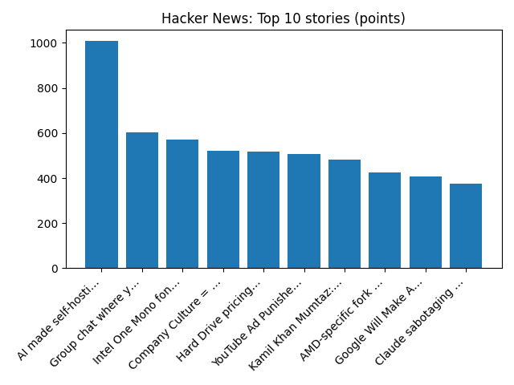

Hundreds of thousands still without power after storms hit US on Thanksgiving
BBC — Science
YOUR DAILY INTELLIGENCE BRIEF · 2026-11-27
Global watch: Hundreds of thousands still without power after storms hit US on Thanksgiving, Weary of war but with no sign of backing down, Kyiv faces another punishing winter.
Northern Virginia: More Than 650,000 Without Power on East Coast - The New York Times, From Lights to Nutcrackers: Holiday Cheer in Northern Virgin... - InsideNoVa.

Global coverage includes Hundreds of thousands still without power after storms hit US on Thanksgiving; Weary of war but with no sign of backing down, Kyiv faces another punishing winter; Canada's top court upholds Quebec religious symbols law in test of unity - Reuters. Local coverage includes More Than 650,000 Without Power on East Coast - The New York Times; From Lights to Nutcrackers: Holiday Cheer in Northern Virgin... - InsideNoVa.

Zhrebchevo Reservoir
Zhrebchevo Reservoir (Bulgarian: Язовир Жребчево) is a large dam and reservoir in central Bulgaria, situated between the Sub-Balkan valleys of Kazanlak and Tvarditsa that lie between the Balkan Mountains to the north and the Sredna Gora mountain range to the south. Administratively, the reservoir is located in the municipalities of Gurkovo and Nikolaevo of Stara Zagora Province and Tvarditsa and Nova Zagora of Sliven Province.
https://en.wikipedia.org/wiki/Zhrebchevo_Reservoir
Runs so far today: 2